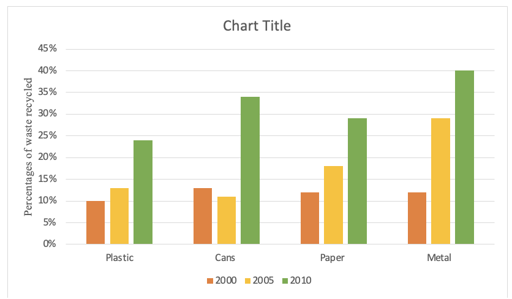

Task 1
You should spend about 20 minutes on this task.
The graph below shows percentages of types of waste that were recycled in a town between 2000 and 2010.
Summarise the information by selecting and reporting the main features making comparisons where relevant.
Write at least 150 words.
Task 2
Write about the following topic:
You should spend about 40 minutes on this task.
Today many teenagers rely greatly on technology when learning.
Is this a positive or negative development?
Give reasons for your answer and include any relevant examples from your own knowledge or experience.
Write at least 250 words.